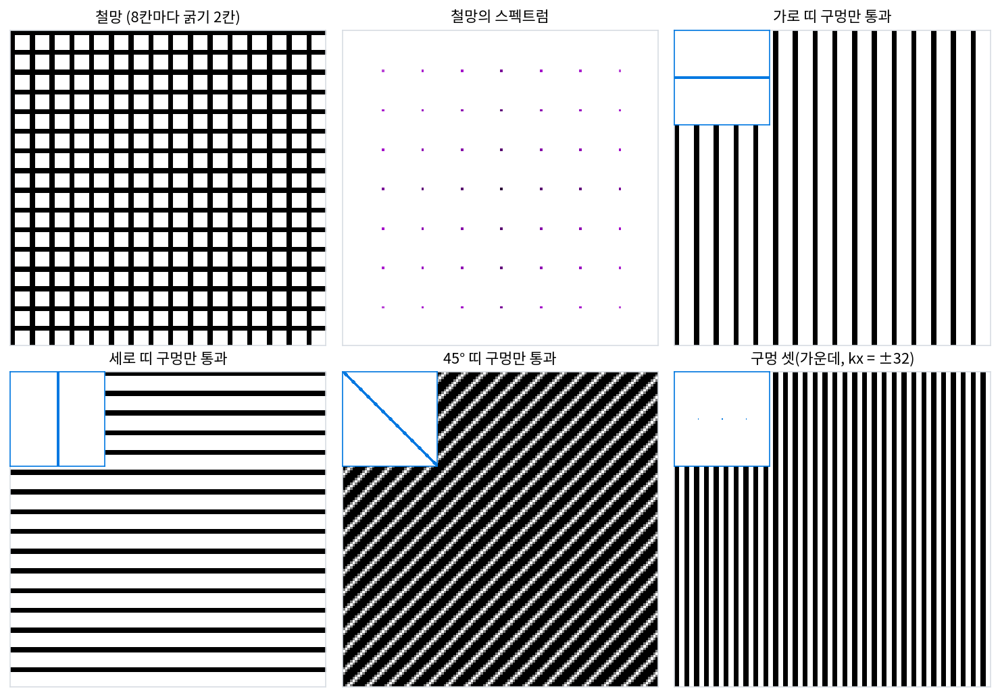
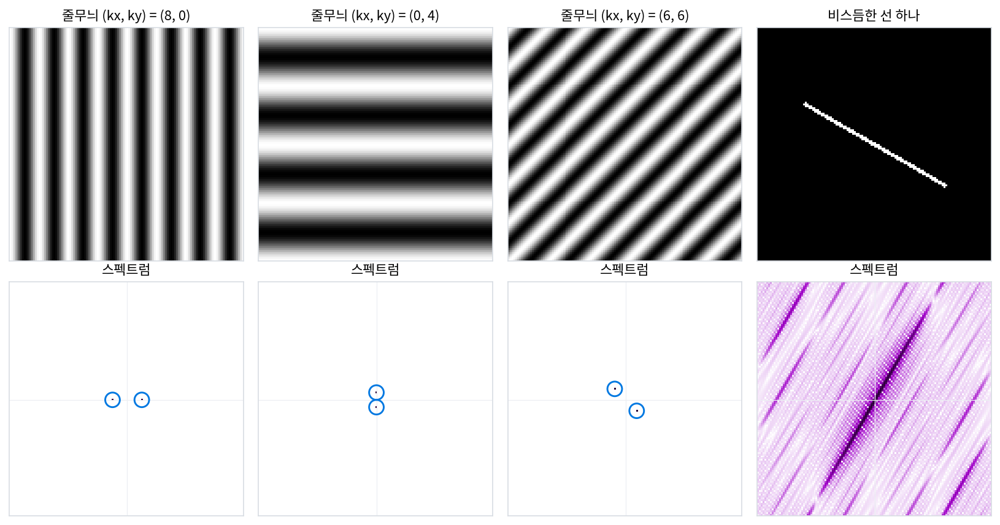
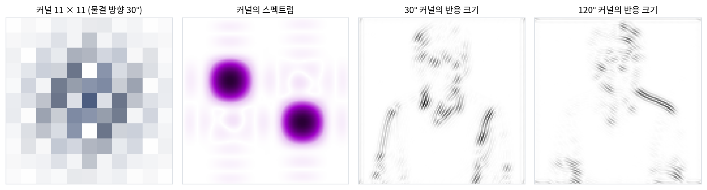
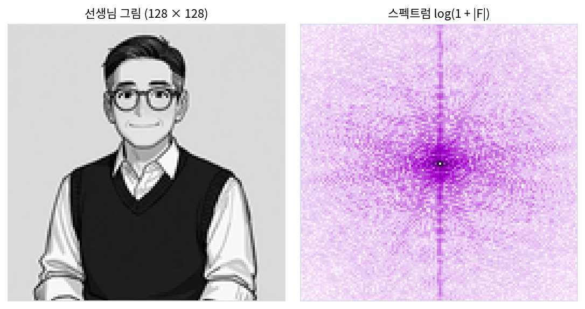

이미지: 그림을 스펙트럼으로 보기
이 장의 물음
소리 한 토막은 시각마다 숫자 하나였고, 그 스펙트럼은 「얼마나 빠른 물결이 얼마만큼 들어 있나」를 주파수 하나의 눈금 위에 늘어놓은 것이었다. 사진은 가로와 세로, 두 방향으로 칸이 늘어서 있다는 점이 다르다. 줄무늬 셔츠를 찍은 사진에서 줄의 촘촘함은 같아도 줄이 세로로 섰는지 비스듬히 누웠는지는 전혀 다른 모습이다. 그림의 스펙트럼은 이 「방향」을 어디에 적을까?
스펙트럼 그림을 실제로 그려 보면 또 하나의 물음이 생긴다. 선생님 그림과 이서연 그림(이 책의 대화에 나오는 인물 그림)의 스펙트럼을 나란히 놓으면 둘 다 가운데가 진하고 바깥으로 갈수록 옅어지는 비슷한 얼룩이다. 그런데 그림 둘은 누가 봐도 다른 사람이다. 스펙트럼 그림이 보여 주지 않는 무엇이 얼굴을 알아보게 할까?
ML에서도 같은 장면이 나온다. 그림을 학습한 합성곱 신경망의 첫 층 합성곱 커널(이웃 칸에 곱해 더하는 작은 무게 묶음)을 꺼내 보면, 사람이 가르쳐 주지 않았는데도 저마다 다른 방향의 줄무늬 조각이 된다. 사진에 사람 눈에는 보이지 않을 만큼 옅은 얼룩을 더하면 분류기의 답이 바뀌기도 한다. 이런 현상을 주파수의 말로는 어떻게 설명할 수 있을까?
이 장은 다음 물음에 차례로 답한다.
- 그림 속 줄무늬의 방향은 스펙트럼의 어디에 나타날까? 스펙트럼의 일부만 남기면 그림은 어떻게 바뀔까?
- 계수마다 크기와 위상이 있다. 둘 가운데 무엇이 그림을 알아보게 할까?
- 그림의 가장자리는 스펙트럼에서 어떤 모습일까? 가는 무늬의 세기만 알면 가장자리를 되살릴 수 있을까?
2차원 스펙트럼의 방향: 스펙트럼의 점은 줄무늬와 직각으로 놓인다
그림을 굵은 무늬와 가는 무늬로 나눠 보는 눈은 이미 있다. 그림 한 폭 안에 무늬가 몇 번 되풀이되는지를 「공간 주파수」라 부르고, 사진의 세기는 굵은 무늬(낮은 공간 주파수)에 몰려 있다는 것까지가 디퓨전 책의 스펙트럼 이야기다.
그런데 「몇 번 되풀이되나」는 소리에서 가져온 말이다. 소리는 시간 한 줄 위에 있어서 물결이 나아갈 방향이 앞쪽 하나뿐이다. 그림에서는 같은 촘촘함의 줄무늬가 세로로도, 가로로도, 비스듬히도 설 수 있다. 횡단보도를 위에서 찍은 사진과 그 사진을 45° 돌린 사진은 촘촘함은 같고 방향만 다르다. 스펙트럼은 둘을 어떻게 가를까?
역사: 철망과 띠 구멍
현미경으로 아주 가는 구조를 보면 상이 흐려지거나 엉뚱한 무늬가 나타나곤 했다. 독일의 아베(Ernst Abbe)는 1873년 『현미경 해부학 기록(Archiv für mikroskopische Anatomie)』에 실은 논문에서 그 까닭을 빛의 꺾임으로 설명했다. 물체에 부딪힌 빛은 여러 방향으로 꺾여 나가고, 렌즈 뒤 초점 자리에 꺾인 빛이 만드는 무늬가 맺히며, 상은 그 무늬의 빛이 다시 겹쳐서 만들어진다는 것이다. 그렇다면 렌즈가 꺾인 빛의 일부만 받아들이면 상은 원래 물체가 아니라 「받아들인 부분만으로 꺾임 무늬가 만들어지는 다른 물체」를 보여 준다.
포터의 말로는, 이 주장은 32년이 지나도록 현미경 연구자들 사이에서 어느 정도 다툼거리로 남아 있었다. 미국의 포터(Albert B. Porter)는 1905년 4월 22일 미국 물리학회에서 읽고 이듬해 『철학 잡지(Philosophical Magazine)』에 실은 논문 「현미경 관찰의 꺾임 이론에 관하여」에서 아베의 주장을 푸리에 급수로 풀고, 누구나 해 볼 수 있는 실험을 내놓았다. 1 cm에 철사가 30가닥쯤 지나는 철망을 렌즈 앞에 두면 렌즈 뒤 막에 점들이 바둑판처럼 맺힌다. 막에 구멍을 뚫어 일부 점만 지나가게 하고 눈으로 철망을 보는 것이다. 포터의 기록에 따르면, 가운데 점만 지나가게 할 때 철망은 보이지 않는다. 가로로 길게 낸 띠 모양의 구멍(띠 구멍)으로 가운데 점과 그 양옆의 점만 지나가게 하면 세로 철사만 보인다. 띠 구멍을 세로로 돌리면 가로 철사만 보인다. 띠 구멍을 45° 돌리면 세로 철사도 가로 철사도 사라지고, 철망에 없던 비스듬한 철사가 「아주 진짜처럼」 나타난다.

포터의 실험을 칸으로 다시 해 보면 위 그림이 나온다. 렌즈 뒤 막에 맺힌 점들이 철망의 스펙트럼이고, 막의 구멍은 계수 일부만 남기고 나머지를 0으로 두는 일이다. 가로 띠 구멍은 가운데 가로줄과 그 위아래 한 줄씩, 폭 3줄짜리 띠 위의 계수 384개만 남긴다(그 가운데 0이 아닌 것은 가로축 위의 점들뿐이다). 되돌린 그림은 세로 철사뿐이다. 가로 띠 구멍을 지난 점들이 가로로 늘어서 있었는데 그림에는 세로줄이 섰다. 방향이 90° 돌아간 것이다.
줄무늬 셋과 선 하나
왜 90°인지 가장 단순한 그림으로 보자. 128 × 128칸 위에 밝기가 코사인 물결 하나로 바뀌는 줄무늬를 그린다.
괄호 안의 kxx + kyy 가 같은 값인 칸들은 밝기가 같다. 그런 칸들은 곧은 줄을 이루고, 그 줄은 화살표 (kx, ky)와 직각이다. 그러니 물결은 (kx, ky) 쪽으로 나아가고, 밝은 줄(마루)은 그와 직각으로 선다. 스크립트로 세 줄무늬의 2차원 DFT 를 구하면 가운데(평균 밝기)를 뺀 세기가 모두 점 두 개에 들어 있다.
| 줄무늬 (kx, ky) | 계수가 0 이 아닌 자리 | 물결 한 번의 길이 | 물결이 나아가는 방향 | 밝은 줄의 방향 |
|---|---|---|---|---|
| (8, 0) | (8, 0), (−8, 0) | 16칸 | 0° (오른쪽) | 90° (세로줄) |
| (0, 4) | (0, 4), (0, −4) | 32칸 | 90° (아래) | 0° (가로줄) |
| (6, 6) | (6, 6), (−6, −6) | 15.08칸 | 45° | 135° |
점은 늘 가운데를 사이에 두고 마주 보는 한 쌍이다. 실수 그림에서는 (kx, ky)와 (−kx, −ky) 자리의 계수가 크기는 같고 각도는 반대이기 때문이다(DFT 에서 실수 신호의 양의 주파수 계수와 음의 주파수 계수가 그렇게 맞물리던 것과 같다). 가운데에서 점까지의 거리 √(kx² + ky²)는 촘촘함이고, 가운데에서 점을 향한 방향은 물결의 진행 방향이다. 그래서 그림의 줄과 스펙트럼의 점 쌍은 늘 서로 직각으로 놓인다.
이렇게 2차원 물결 하나를 가리키는 수 두 개를 묶은 화살표 (kx, ky)를 주파수 벡터 (촘촘함과 방향을 함께 담은 화살표 / wave vector)라 한다. 소리의 주파수가 「얼마나 빠른가」 하나였다면, 그림의 주파수 벡터는 길이로 촘촘함을, 방향으로 물결의 진행 방향을 함께 적는다. 그림 전체는 이런 물결의 합이다.
스펙트럼 그림은 계수의 크기 |F|를 주파수 벡터 평면 위에 칠한 것이다. 가운데가 (0, 0)이고, 가운데에서 멀수록 가는 무늬, 가운데에서 본 방향이 물결이 나아가는 방향이다.

줄무늬가 아닌 것도 같은 규칙을 따른다. 위 그림 맨 오른쪽은 30° 기울어진 밝은 선 하나다. 그 스펙트럼은 120° 방향으로 길게 뻗은 띠가 된다. 세기의 79.8%가 120° ± 7.5° 쐐기 안에 들어 있다(쐐기 하나는 180° 가운데 15°이니 세기가 고르게 퍼졌다면 8.3%다). 선을 따라가는 방향으로는 밝기가 거의 바뀌지 않으니 그 방향으로 나아가는 물결은 필요 없고, 선을 가로지르는 방향으로는 밝기가 한순간에 바뀌니 그 방향의 물결이 굵은 것부터 가는 것까지 모두 필요하다. 그래서 그림 속 곧은 윤곽 하나는 스펙트럼에서 그와 직각인 띠 하나가 된다.
포터의 띠 구멍도 이제 읽힌다. 철망의 스펙트럼에서 가로축 위의 점들은 세로 철사가, 세로축 위의 점들은 가로 철사가 만든 것이다(가운데를 뺀 세기의 42.9%씩, 나머지 14.3%는 두 철사가 겹친 자리가 만든 축 밖의 점들). 가로 띠 구멍은 세로 철사의 점만 남기므로 세로 철사만 보인다. 45° 띠 구멍은 축 밖의 대각선 점들만 남기는데, 그 점들은 「45° 쪽으로 나아가는 물결」이니 135° 방향으로 줄이 선다. 철망에 그런 철사는 없었다. 대각선 점들만으로 꺾임 무늬가 만들어지는 다른 물체, 아베가 말한 그 물체가 나타난 것이다. 구멍 셋(가운데와 kx = ±32)으로는 세로줄이 4칸 간격으로 선다. 철사 간격 8칸의 절반이다. 포터도 가운데 점과 두 번째 점들만 지나가게 했을 때 철사 간격의 절반인 세로줄을 보았다고 적었다.
ML에서: 첫 층 합성곱 커널을 스펙트럼으로 보면
2012년 크리젭스키(Alex Krizhevsky)와 동료들이 ImageNet 대회에서 우승한 신경망은 첫 층에서 11 × 11칸 합성곱 커널 96개를 배웠고, 그 커널들은 여러 촘촘함과 방향을 고르는 줄무늬 조각이 되었다. 고양이 시각 피질의 세포가 저마다 특정한 방향의 선에 반응한다는 허블(David Hubel)과 비셀(Torsten Wiesel)의 발견과 자주 나란히 소개되는 결과다.
이 장의 눈으로 보면 그런 커널 하나는 스펙트럼의 한 자리를 고르는 필터다. 첫 층 커널을 닮은 조각을 직접 만들어 보자. 11 × 11칸 위에 물결 길이 4칸, 30° 쪽으로 나아가는 코사인 물결을 그리고, 가운데에서 멀어질수록 종 모양(가우스, 폭 2.5칸)으로 옅게 만든 것이다. 이런 모양을 가보르(Gabor) 모양이라 부른다. 이 커널을 128칸 그림에 놓고 스펙트럼을 구하면 크기가 가장 큰 자리는 (kx, ky) = (28, 16)이다. 방향 29.7°, 길이 32.25로, 물결 길이 4칸에 해당하는 128/4 = 32 자리다.

커널의 스펙트럼은 그 커널이 어떤 물결을 통과시키는지를 보여 준다. 합성곱은 주파수마다 커널의 계수를 곱하는 일이기 때문이다(평행이동 대칭과 합성곱 정리에서 다룬 성질이다). 이 커널은 30° 둘레의 좁은 얼룩만 통과시키므로, 그림 속에서 30° 쪽으로 밝기가 출렁이는 곳, 곧 120° 방향으로 그어진 윤곽에만 크게 반응한다. 첫 층에 이런 커널이 방향마다 있으면, 신경망은 그림을 방향별로 나눠 본다.
문제 1. 위에서 찍은 횡단보도
드론으로 횡단보도를 바로 위에서 찍었다. 사진 한 변은 10 m 이고 200 × 200칸이다. 흰 띠 50 cm 와 빈 곳 50 cm 가 되풀이되고, 띠가 되풀이되는 방향은 사진의 가로 방향이다. (가) 스펙트럼에서 가장 센 계수 한 쌍은 어느 자리에 있는가? (나) 띠가 가로 방향이 아니라 45° 방향으로 되풀이되도록 돌려 찍으면 그 쌍은 어디로 가는가? (다) 흰 띠는 코사인 물결처럼 부드럽게 바뀌지 않고 경계에서 뚝 끊긴다. 가장 센 쌍 말고 어느 자리에 계수가 또 있는가?

띠가 가로로 되풀이되면 띠 자체는 세로로 서 있는 거잖아요. 세로줄이니까 스펙트럼 점도 세로축 위에 있겠죠. (0, 10)이요.

10 은 어떻게 나왔어요?
띠 하나가 50 cm 니까 10 m 에 20번이요. 아, 그럼 (0, 20)인가요?

둘 다 이상해. 흰 띠 하나와 빈 곳 하나가 합쳐서 한 번 되풀이니까 1 m 에 한 번, 10 m 에 10번이야. 그리고 점은 줄과 같은 방향이 아니라 물결이 나아가는 방향에 놓이잖아. 띠는 가로로 되풀이되니까 (10, 0)과 (−10, 0)이야.

민준 학생은 어디서 방향이 바뀌었을까요? 사진 속 줄의 방향과 스펙트럼 점의 방향을 견줘 보세요.

줄이 세로로 섰다는 건 가로로 가면서 밝기가 출렁인다는 거네요. 점은 출렁이는 방향에 놓이니까 가로축이에요. 스크립트로 보니 (10, 0) 둘레에 세기의 81.7%가 들어 있어요. (나)는 (10 cos 45°, 10 sin 45°) = (7.07, 7.07)인데, 칸이 정수라 가장 센 자리는 (7, 7)이고 그 둘레에 80.0%가 있어요.
(다)는 경계가 뚝 끊기니까 가는 물결이 필요해. 흰 띠와 빈 곳이 반반인 네모 물결은 홀수 배 물결만 가지니까 (30, 0), (50, 0) 자리에도 계수가 있을 거야. 세 배 자리 둘레에 9.7%가 있네. 네모 물결의 세기가 1 : 1/9 : 1/25 로 주는 것과 맞아.

1차원 네모 물결의 홀수 배음이 그대로 가로축 위에 줄지어 선 거야. 철망 스펙트럼의 점들이 16칸 간격으로 늘어선 것도 같은 까닭이고.
문제 2. 선생님 그림의 세로줄
아래는 선생님 그림(128 × 128칸, 평균 밝기를 뺌)과 그 스펙트럼이다. 스펙트럼 한가운데를 위아래로 지나는 진한 세로줄이 보인다. (가) 이 세로줄은 그림 속 어떤 방향의 출렁임에서 왔는가? 선생님 그림에 그런 윤곽이 많은가? (나) 2차원 DFT 는 그림이 가로·세로로 끝없이 되풀이된다고 보고 계산한다. 그림의 위 끝 행과 아래 끝 행, 왼쪽 끝 열과 오른쪽 끝 열을 비교해 세로줄이 생긴 까닭을 말하라. (다) 그림 가장자리를 0으로 부드럽게 낮추는 창(해닝 창: 가운데는 1이고 양 끝으로 갈수록 0으로 내려가는 코사인 종 모양, 가로·세로로 곱함)을 씌우면 세로줄은 어떻게 되는가?

세로줄이면 kx = 0 인 자리들이니까 위아래로 출렁이는 물결, 그림에서는 가로로 그어진 윤곽이야. 어깨선이나 조끼 아래 끝 같은 거?
그런 윤곽이 있긴 하죠. 그런데 숫자로 보면 어때요? 가는 무늬 쪽(|k| ≥ 32)만 봐요.
스크립트로 세 보니 |k| ≥ 32 에서 세로축 위 계수는 65개, 그 범위 계수의 0.49%인데 세기는 4.45%를 차지해요. 아홉 배쯤이요. 가로축은 0.84%라서 두 배도 안 되고요. 가로 윤곽이 세로 윤곽보다 아홉 배 많아 보이지는 않는데요.

(나)의 힌트대로 그림을 위아래로 이어 붙이면 어디가 맞닿을까요?

위 끝 행은 밝은 회색 바탕이고 아래 끝 행은 짙은 조끼예요. 두 행의 평균 밝기 차이가 0.40인데, 그림 안에서 이웃 행끼리의 차이는 평균 0.036이에요. 위아래로 이어 붙이면 이음매에 가로로 곧게 그은 아주 센 경계가 생기는 거죠. 왼쪽 끝 열과 오른쪽 끝 열은 둘 다 바탕이라 차이가 0.0019밖에 안 돼서 가로축에는 줄이 없고요.
(다)는 해 봤어요. 해닝 윈도우를 씌우니까 세로축 위 세기가 4.45%에서 0.53%로, 계수 수의 비율 0.49%와 비슷해졌어요. 줄이 사라졌네요.
그래요. DFT 의 「끝없이 되풀이된다」는 단서를 잊으면 그림에 없던 경계를 스펙트럼에서 보게 돼요. 만약 그 단서가 없는 변환, 그러니까 그림 밖이 모두 0이라고 보는 계산이었다면요?

그래도 그림 테두리에서 밝기가 0으로 뚝 떨어지니까 네 변 모두에 경계가 생겨요. 되풀이로 보든 0으로 보든 테두리가 문제고, 윈도우는 테두리를 부드럽게 해서 없애는 거네요.

보고서 표를 이어 붙일 때 페이지 끝과 다음 페이지 첫 줄이 안 맞으면 그게 제일 눈에 띄는 거랑 같아요.
문제 3. 120° 합성곱 커널은 무엇에 반응하나
첫 층 합성곱 커널을 닮은 11 × 11 합성곱 커널 h 가 있다. 물결 길이 4칸, 이번에는 120° 쪽으로 나아가는 코사인 물결을 폭 2.5칸 종 모양으로 감싼 것이다. (가) 128칸 그림 위에서 이 커널의 스펙트럼은 어느 자리에서 가장 큰가? (나) 같은 128칸 위에 물결 길이 4칸인 줄무늬 둘을 그린다. 하나는 120° 쪽으로, 하나는 30° 쪽으로 나아간다. 커널을 건 반응의 크기(제곱평균제곱근)는 어떻게 다른가? 120° 쪽이지만 물결 길이가 8칸인 줄무늬라면? (다) 커널 96개가 「방향과 촘촘함마다 하나씩」이면 무엇이 좋은지 말하라.
(가)는 120° 쪽, 길이 128/4 = 32 자리니까 (32 cos 120°, 32 sin 120°) = (−16, 27.7)이고, 정수로는 (−16, 28)이요. 그 맞은편 (16, −28)도요. 스크립트도 (−16, 28)이에요.
(나)는 120° 줄무늬에 크게, 30° 줄무늬에 작게 반응하겠지. 숫자로는?
120° 줄무늬에 6.5771, 30° 줄무늬에 0.0636이에요. 백 배 차이요. 그럼 120° 쪽이면 물결 길이가 달라도 비슷하게 반응하겠네요.
물결 길이 8칸이면 주파수 벡터는 어디에 있죠? 커널 스펙트럼의 얼룩과 겹칠까요?
길이 128/8 = 16 자리니까 가운데에 더 가까워요. 얼룩은 32 자리 둘레에 있으니까 잘 안 겹치고… 반응이 1.0827로 6분의 1이에요. 방향만이 아니라 촘촘함도 골라요.
본문의 30° 커널 반응 그림과 120° 커널 반응 그림도 그랬어. 30° 커널은 어깨와 팔의 비스듬한 윤곽에서, 120° 커널은 반대쪽으로 기운 윤곽에서 밝았어.

커널마다 스펙트럼의 한 조각을 맡는다면, 96개를 모두 모았을 때 스펙트럼 평면은 어떻게 되어 있을까요?
방향과 촘촘함으로 평면을 조각조각 나눠 덮는 거네요. 커널 하나하나는 조각 하나의 물결만 통과시키니까, 다음 층은 「어느 방향 윤곽이 어디에 있나」를 따로따로 받아요.

횡단보도 문제에서 띠 방향에 따라 점이 다른 데 서던 거랑 같아요. 커널은 그 점 하나 둘레에 그물을 친 거고요.